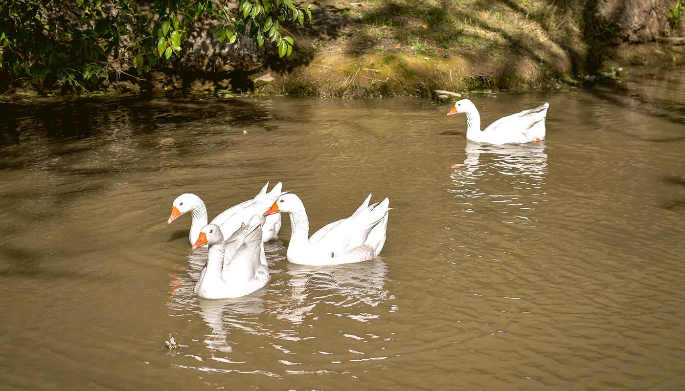

¿QUÉ ES LA FAUNA SILVESTRE?
La fauna silvestre, también llamada autóctona o nativa, son aquellos animales vertebrados e invertebrados que se encuentra en su estado natural de libertad e independencia del ser humano. Es decir, que durante su desarrollo evolutivo han tenido escaso o nulo contacto con el ser humano.
A diferencia de los animales domésticos que son aquellos que han sido seleccionados y manipulados artificialmente por el hombre con el fin de satisfacer alguna necesidad del ser humano, lo que los hace dependientes para poder sobrevivir, como es el caso del perro, gato, caballo, gallina, vaca.
